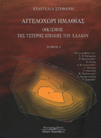

Evangelia Stefani
Angelochori: A Late Bronze Age Settlement in Emathia, Macedonia, Greece. Vol. I
Thessaloniki: Kyriakidis Brothers, 2010
 |
The prehistoric settlement of Angelochori, Emathia, in Macedonia, is located in a rural area, near to its modern namesake village. The excavations lasted from 1994 until 2003 and were conducted by the 17th Ephorate of Prehistoric and Classical Antiquities. The remains of a Late Bronze Age settlement have come to light. The study has started since 2000 and has been supported by the “Shelby White - Leon Levy Program for Archaeological Publications” of the Harvard University (2000-2002), as well as by the Mediterranean Archaeological Trust. The present volume focuses on the natural environment, the habitation phases, the stratigraphy and the architecture of the settlement. It also presents radiocarbon dates, as well as archaeobotanical, archaeozoological and archaeomalacological material. A second volume will include the pottery and other small finds. T he book written in Greek contains a detailed summary in English. Copies may be ordered by contacting: |
| Back to Publications | Table of Contents |